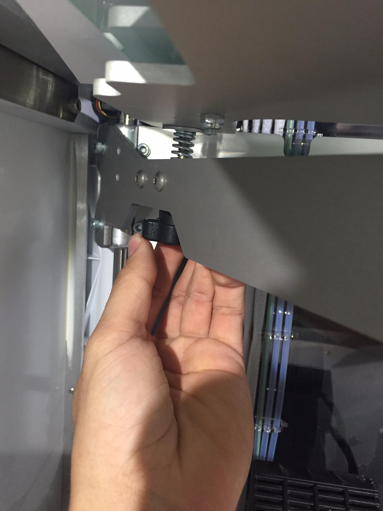
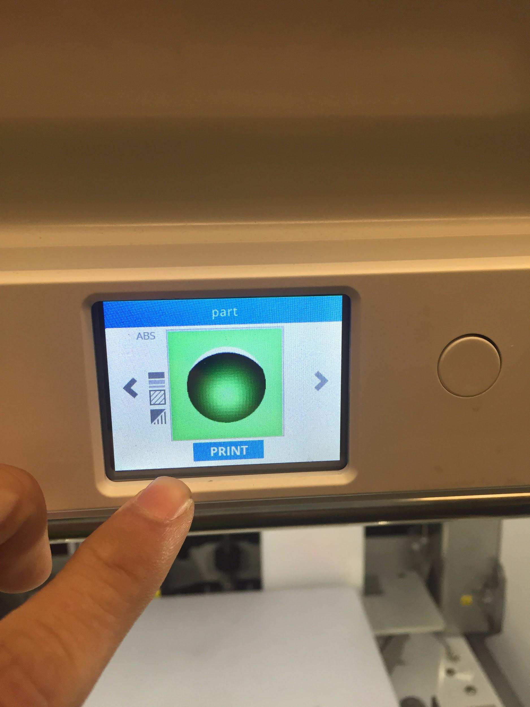

Printing the 3D Object
Starting Up CubePro
-
To start the CubePro, first turn on power by flipping the switch on the right side of the CubePro.

Checking the Cartridge
-
The screen you see above is the home screen. Before printing can begin, the "Setup" icon must be selected.

-
Once "Setup" has been chosen, you should select "Cartridge Status" to check what plastic is in the cartridge and how much is left.

-
The cartridge status here shows that ABS plastic is being used, with 5% remaining. Once it is determined that there is sufficient material, press the check button to return to the previous screen.

-
Now that the cartridge is set up, select the arrow to the right for the next step.
Checking the Plate
-
Select "Level Plate" to ensure that the jet has an even surface to print on.

-
To adjust the height of the plate, turn the knobs underneath the plate. Clockwise lifts the plate and counterclockwise lowers the plate.
 -
To determine if the plate is level, place a piece of paper on the plate between the jet and the plate. Adjust the plate until there is some resistance to move the plate. For best results, try to create the same level of resistance for each of the three locations.

Printing the 3D Object
-
Now that the setup is complete, the "Print" option can be selected.

-
Select the part you created and touch "Print".
 -
The CubePro will then notify you to apply glue to the plate.

-
Apply glue to the build plate over the area that you will be printing onto. Try to create as consistent of a layer of glue as possible.

-
Once started, the 3D printer will layer material onto itself to create the geometry input through the file.

-
Once the printing process is complete, you will be left with your almost finished object sitting on your build plate. Carefully remove the object from the printer and break off the internal supports created in the printing process. You will be left with your finished product.

-
Congratulations! You have printed your first object with 3D printing. The methods discussed in this tutorial can be used to print a wide range of objects with a variety of uses.

Once You've Finished...
Click here to go back to the beginning.